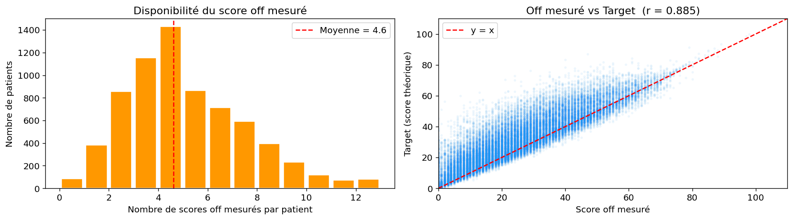
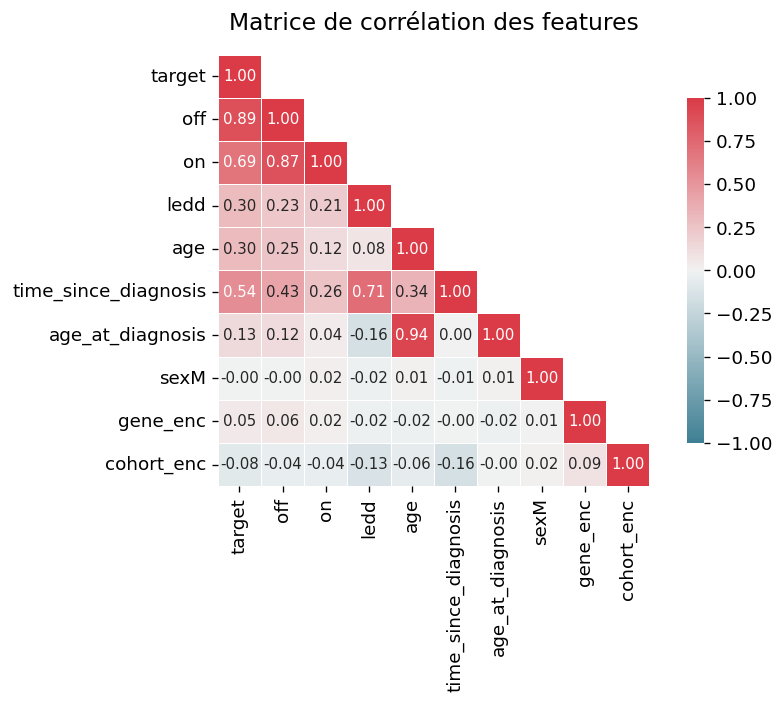
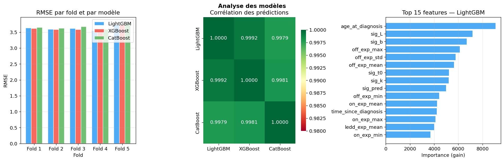
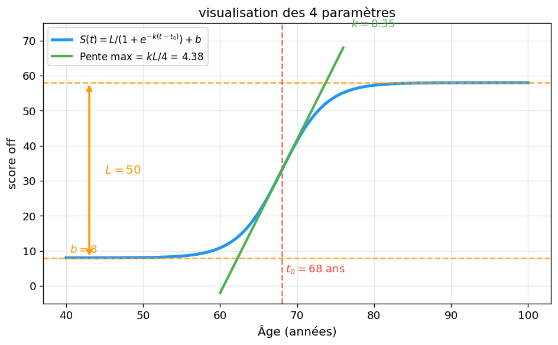
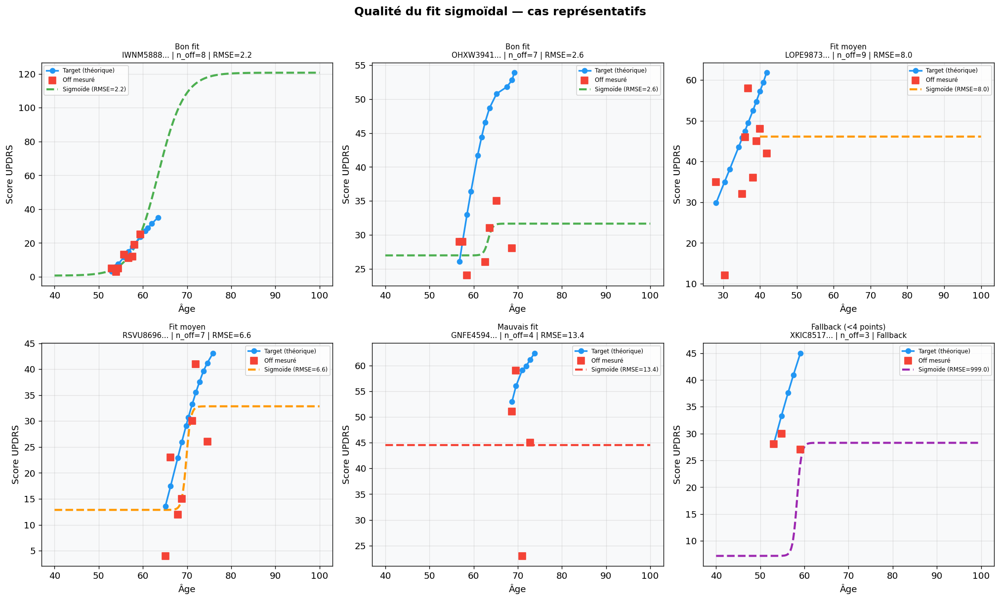
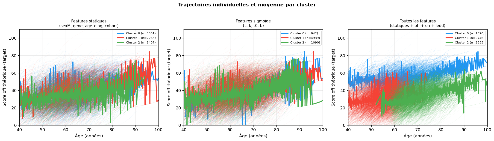

Parkinson’s UPDRS Prediction
Challenge ENS Data — Paris Brain Institute
Download code
Overview
ENS Data challenge from the Paris Brain Institute: predict the theoretical off UPDRS motor score of Parkinson’s patients from longitudinal clinical visits. The target is a continuous variable ranging from 0 to 109.5 with high dispersion (standard deviation 16.5), predicted from tabular features across 55,603 observations.
The dataset has two defining difficulties:
- High missingness on the most informative columns: the measured off score is missing in 42% of cases, ledd in 37%, and on in 30%. Imputing ledd by median or interpolation would amount to inventing a treatment that does not exist, so the model must handle NaNs natively.
- Strong but incomplete signal: when the measured off score is present, its correlation with the target is r = 0.885 — the single strongest predictor in the dataset.


This missingness profile motivated gradient boosting over linear models or SVMs: boosting handles NaNs natively and regularizes more finely, avoiding the imputation bias that other approaches would require.
Approach & Results
| Stage | Description | RMSE |
|---|---|---|
| Baseline LightGBM | Raw features only | ~53 |
| + KMeans clustering (k=3) | One expert model per patient group | ~49 |
| + Sigmoid fit (L, k, t₀, b features) | Individual trajectory modeling | ~14 |
| − Remove clustering | Single model, more data per model | 14 → 12.8 |
| + Lag features & expanding means | Causal memory of previous visits | ~12 |
| + Ensemble LightGBM+XGBoost+CatBoost | Algorithmic diversity | ~11.5 |
The largest single gain came from the sigmoid trajectory modeling (detailed below), which took RMSE from ~49 to ~14. Beyond that, I engineered causal temporal features that respect the sequential structure of patient follow-up: sequential position within the visit history, lag features (off_lag1, off_lag2, on_lag1, ledd_lag1), causal expanding means, and local regression slopes over the last three measured off scores. All are strictly causal to avoid temporal leakage.
The final model is a three-way ensemble combined by Ridge stacking on out-of-fold predictions:
\hat{y}_{\text{final}} = \alpha_1 \hat{y}_{\text{LGBM}} + \alpha_2 \hat{y}_{\text{XGB}} + \alpha_3 \hat{y}_{\text{CAT}} + \beta_0
LightGBM, XGBoost and CatBoost are all gradient boosting methods but use different learning algorithms (leaf-wise vs level-wise vs ordered boosting). Their slightly decorrelated errors (\rho < 1) make the blend’s variance lower than that of any individual model. Validation used GroupKFold so that all observations from a given patient fall entirely within a single fold, preventing identity leakage:
\forall p \in \text{patients}, \quad \{o \mid \text{patient}(o) = p\} \subset \text{train}_k \text{ ou } \subset \text{val}_k

Focus: Sigmoid Trajectory Modeling
The disease progression of the theoretical off score biologically follows an S-shaped curve. I model each patient’s trajectory as a four-parameter sigmoid of age:
S(\text{age}) = \frac{L}{1 + e^{-k(\text{age} - t_0)}} + b
| Parameter | Interpretation |
|---|---|
| L | Total progression amplitude (plateau − baseline) |
| k | Progression speed (slope at inflection) |
| t_0 | Inflection age — moment of maximal progression |
| b | Baseline score at disease onset |

The fitted parameters (L, k, t_0, b) become features fed to the boosting models. A crucial design choice: I fit the sigmoid only on measured off scores, never on the target. Fitting on the target would yield near-perfect parameters in training (MAE ≈ 0.09) but collapse at test time (MAE ≈ 7.7), since the target is unavailable there — a textbook leakage trap.
Handling under-constrained patients. Four free parameters cannot be constrained by fewer than four measured points. Patients with fewer than four measured off scores fall back to the median parameters of similar patients (same cohort, mutation, and sex).

Fit quality distribution across 6,971 patients:
- Good fit (RMSE < 3): 1,350 patients (19.4%)
- Medium fit (3 < RMSE < 12): 3,096 patients (44.4%)
- Poor fit (RMSE > 12): 48 patients (0.7%)
- Fallback (no convergence): 2,477 patients (35.5%)
Negative Results / Fails
KMeans clustering into expert models
The initial intuition was that Parkinson’s progression falls into 3–5 distinct patient profiles, so I clustered patients and trained one expert model per group. Maintaining three separate models added variance (less data per model) without reducing bias. Collapsing from three clustered models back to a single model improved RMSE (14 → 12.8).

MLP and Neural ODE
Neither a dense network nor a Neural ODE improved the score, for structural reasons:
- With only 4–12 observations per patient, an MLP learns a population-average model rather than an individual trajectory, reaching an out-of-fold RMSE of ~13–15 where LightGBM easily reaches 3.5.
- A Neural ODE requires the initial state z_0 to integrate dz/dt = f(z, t, \theta). When the earliest measurements are missing, z_0 is unknown and integration diverges. The CNODE paper (Wang 2025) solves this with an RNN encoder over brain MRI — data we do not have here.
Lessons Learned
The most important insight is that the start of the trajectory is critical. The four-parameter sigmoid needs measurements spanning all three phases of the curve — low plateau (b), acceleration (k, t_0), high plateau (b+L) — to be constrained. When the earliest measurements are missing, only the right, near-linear part of the sigmoid is observed, where curvature is weak. In that regime a slow, advanced sigmoid (small k) is indistinguishable from a fast, early-plateau sigmoid (large k), making the parameters unidentifiable.
The parametric sigmoid ultimately gave the best result for this problem: it is well suited to the low number of observations per patient, encoding an explicit biological prior that data-hungry approaches could not recover from the data alone.